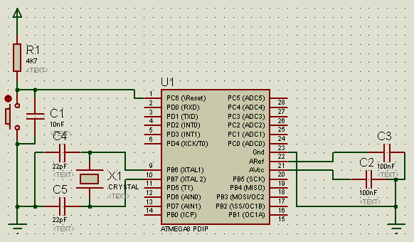

The Micro And Surrounding Circuits
The AVR needs a reset button. As \Reset is active low, the button is connected from \Reset (Pin 1/PortC.6) to ground. To keep \Reset high during normal operation a 4K7 pullup resistor is added. For additional protection a 10nF cap is added from \Reset to Ground.
For crystal operation two load caps of 22pF are needed, these are connected from the crystal pins to ground. If no crystal is used the free pins belong to PortB. The header for this is described on the Other Connectors and Jumpers page.
Aref and Avcc each have a decoupling cap to ground to reject noise on these pins. The donnector for an external Aref is also described together with the other connectors (see link above).
